Lab 4. Discrete Time Fourier Transform
Contents
A. Discrete-TimeFourierTransform(DTFT)
1.
N_0 = 128; T = 1/128; n = (0:N_0-1); x = (0.8.^n).*(1.0.*(n>=0 & n < 7));clc X = fft(x); f = (0:N_0-1)/(T*N_0); stem(f,abs(X),'k.'); axis([0 50 0 5]); xlabel('f [Hz]'); ylabel('|X(f)|'); stem(f-1/(T*2),fftshift(abs(X)),'k.');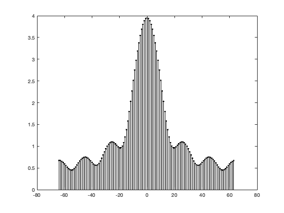
2.
stem(f-1/(T*2),fftshift(angle(X)),'k.'); axis([-pi pi -1.1*pi 1.1*pi]); xlabel('f [Hz]'); ylabel('\angle X(f)');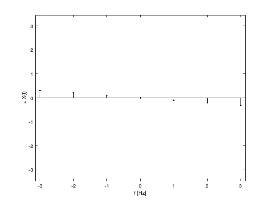
3.
x_2 = ifft(X); stem(n,x_2); % Yes the signal is the same because we are taking the inverse fourier % transform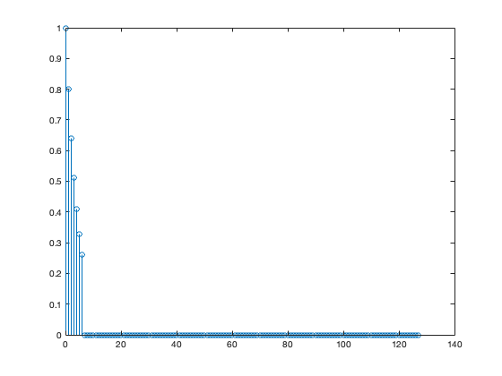
B. TimeConvolution
1.
x_1 = sin(2*pi*n/10).*(1.0.*(n>=0 & n < 7)); omega= linspace(-pi,pi,128); W_omega = exp(-1i).^((0:length(x_1)-1)'*omega); CONV = (x_1*W_omega); stem(n,CONV); axis([0 128 -4 4]); xlabel('f [Hz]'); ylabel('|X(f)|');
Warning: Using only the real component of complex data.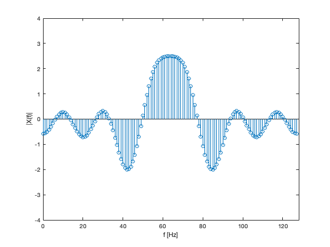
2.
h = 1.0.*(n>=0 & n<10); W_omega2 = exp(-1i).^((0:length(h)-1)'*omega); CONV_2 = (h*W_omega); stem(n,CONV_2); axis([0 128 -4 12]); xlabel('f [Hz]'); ylabel('|H(f)|');
Warning: Using only the real component of complex data.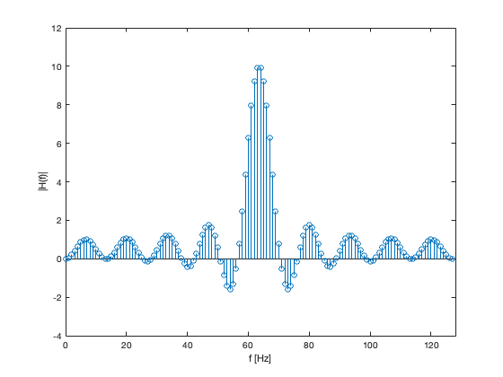
3.
CONV_3 = (CONV.*CONV_2); stem(n,CONV_3); axis([0 128 -12 26]); xlabel('f [Hz]'); ylabel('|H(f)*X|(f)|');
Warning: Using only the real component of complex data.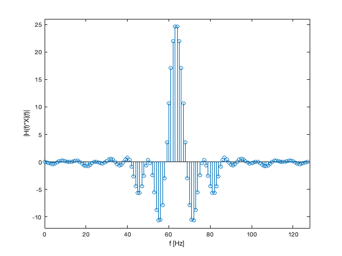
4.
n = (0:254); y = conv(x_1,h); stem(n,y); axis([0 20 -2 5]); xlabel('f [Hz]'); ylabel('|H(f)*X|(f)|');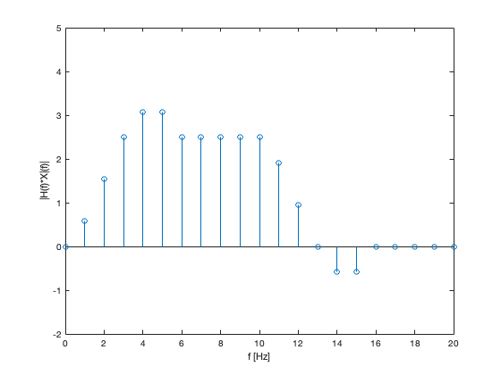
5.
W_omega3 = exp(-1i).^((0:length(y)-1)'*omega); y_dtft = (y*W_omega3); n = 0:127; stem(n,y_dtft); axis([0 128 -20 30]); xlabel('f [Hz]'); ylabel('Y|f|');
Warning: Using only the real component of complex data.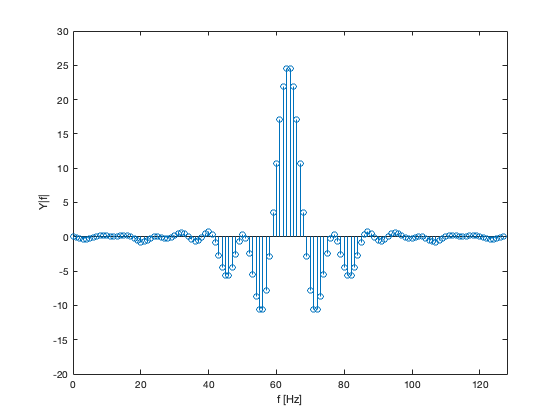
6. Yes the results of 3 and 5 are the same. This is because in 3 we first turned the x and h from time to frequency domain and did multiplicaiton and in 5 we did convulation of the result y.
C. FIR Filter Design by Frequency Sampling
1.
H_d = @(Omega) (mod(Omega,2*pi)<2*pi/3)+(mod(Omega,2*pi/3)>2*pi-2*pi/3); N = 35; h = CH9MP1(N,H_d); Omega = linspace(0,2*pi,1000); samples = linspace(0,2*pi*(1-1/N),N); H = CH5MP1(h,1,Omega); subplot(2,1,1); stem([0:N-1],h,'k.'); xlabel('n'); ylabel('h[n]');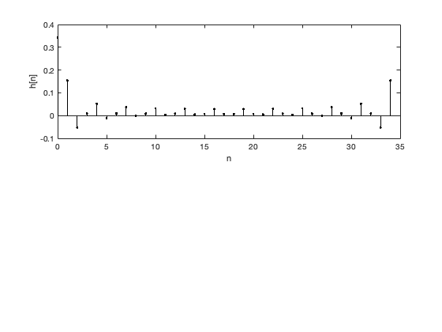
2.
plot(samples,H_d(samples),'k.',Omega,H_d(Omega),'k:',Omega,abs(H),'k'); axis([0 2*pi -0.1 1.6]); xlabel('\Omega'); ylabel('|H(\Omega)|');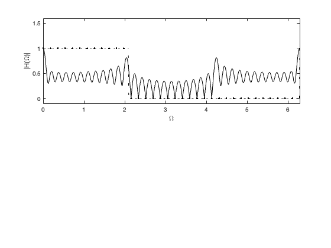
3.
% The results are pretty similar
4.
H_d = @(Omega) (mod(Omega,2*pi)<2*pi/3)+(mod(Omega,2*pi/3)>2*pi-2*pi/3); N = 71; h = CH9MP1(N,H_d); Omega = linspace(0,2*pi,1000); samples = linspace(0,2*pi*(1-1/N),N); H = CH5MP1(h,1,Omega); subplot(2,1,1); stem([0:N-1],h,'k.'); xlabel('n'); ylabel('h[n]'); subplot(2,1,2); plot(samples,H_d(samples),'k.',Omega,H_d(Omega),'k:',Omega,abs(H),'k'); axis([0 2*pi -0.1 1.6]); xlabel('\Omega'); ylabel('|H(\Omega)|');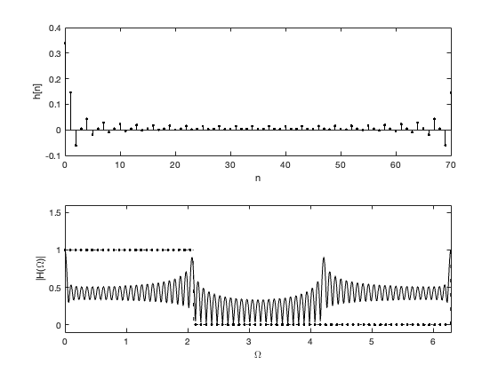
5.
% With the number increase the length of filter increases too